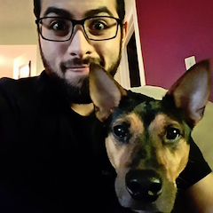

About Me!

Above is a photo of me and my dog Hazel
I adopted him October of 2015 and since has been one of the best decisions of my life
I was born in Miami in 1990
I Graduated from UCF in 2012 and obtained my B.S in Psychology
Since then, I've held multiple jobs associated in sales and therapy (polar opposites)
Heres a small table showing what jobs I had
| Job | Time of Employment |
|---|---|
| Metro PCS | 2008-2013 (Usually Part-time) |
| Mosaic/Samsung | 2013-2015 |
Heres a quick list of my favorite foods
Sushi
Pizza!
And OF COURSE, top 10 movies of ALL time
okay, maybe 5
Across the Universe
Children of Men
Where the Wild Things Are